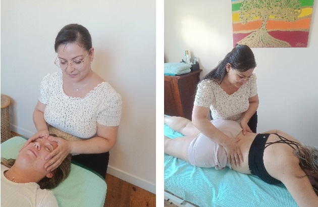

Renseignements (Lyon 7) :
06.71.87.55.11 contact@desmainsquisoignent.fr
Des mains qui soignent, cabinet de thérapie manuelle, méthode Poyet, situé à Lyon 7. Thérapeute : Sabra FOREST
La méthode :
Crée par Maurice Poyet [1928-1996] (infirmier de guerre, kinésithérapeute, ostéopathe et formé en médecine traditionnelle chinoise)
C’est une pratique thérapeutique manuelle (Forme d’ostéopathie non manipulative) qui associe, douceur, globalité, précision et sécurité.
Elle permet d’agir sur différentes structures :
- os,
- muscles,
- organes...
... et est adaptée à tous types de personnes peu importe l’âge, la condition physique ou la pathologie.
La thérapie manuelle repose sur la connaissance précise de l’anatomie et de la physiologie humaine et se base sur les principes fondateurs de l’ostéopathie.
